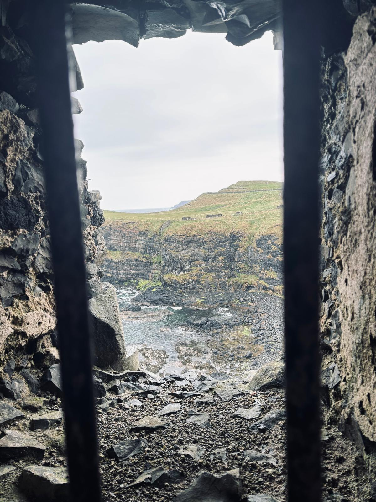

Ruins & History
The castle at the edge of everything
Dunluce Castle stands on a basalt headland above the Atlantic, its ruined towers rising from the rock as though they grew there — one of the most dramatic and melancholy sights on the North Antrim coast.
From a distance, the castle looks almost impossible. Perched on a narrow promontory surrounded by sea on three sides, it seems less like something built and more like something that simply appeared, worn into its current shape by centuries of wind and water.
A history written in stone
Dunluce has been home to some of the most powerful families in Ulster — the MacQuillan clan, and later the MacDonnells, who strengthened and expanded the fortress throughout the 16th century. At its height, it was one of the most significant castle complexes in Ireland.
In 1639, part of the kitchen collapsed into the sea during a storm, taking several servants with it. Not long after, the castle was gradually abandoned — left to the wind, the rain and the slow patience of the cliff.
"A castle that looks as though the sea itself is slowly reclaiming it."
A place in film and legend
Dunluce inspired C.S. Lewis's Cair Paravel in The Chronicles of Narnia — Lewis grew up in Belfast and knew the Antrim coast well. The castle also featured in Game of Thrones as the exterior of the Iron Islands.
Standing at its gates, it is easy to understand why storytellers have always been drawn here. The place carries an atmosphere of endings and of things that once were great.
Dunluce Castle — filmed on location, North Antrim coast.
The second view
Walk a little further along the headland and the castle reveals a different face — the sea below, the ruins above, and nothing between them but air and memory.

The castle from the coastal path — County Antrim.
Visitor notes
- Golden hour light transforms the stone into something extraordinary.
- Walk the coastal path for wider views of the promontory.
- The interior ruins are accessible — allow time to explore slowly.
- Wind can be fierce; a coat is always worth bringing.
A final note from the Chronicle
Dunluce Castle is not a place you simply visit and leave. It stays with you — that particular combination of ruin, cliff and sea that Northern Ireland does better than almost anywhere else. A reminder that history here is not kept behind glass. It stands in the open air, at the edge of the Atlantic, slowly becoming part of the landscape itself.